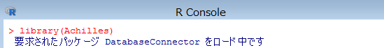

1 Eunomia からデータのエクスポート
2 データベースへのインポート
3 Achilles の実行
以下の手順に従い、インポートするデータを Eunomia からエクスポートします。
まず、エクスポートするテストデータを格納するフォルダを作成しておきます。
※以降の記述は「D:\tmp\output」フォルダを作成した前提の内容となっています。
続いて R コンソールを起動し、以下のコマンドを入力します。
> library(Eunomia)
> folder <- "D:\\tmp\\output"
> exportToCsv(folder)

下図のメッセージが表示されたら実行は完了です。

作成したフォルダを表示し、エクスポートしたデータが格納されている事を確認します。

インポートを始める前に、エクスポートしたデータの内容を一部修正します。
CONCEPT_ANCESTOR.csv
ファイルを開き「3.6e+07」を「36000000」に、「3.7e+07」を「37000000」に置き換えます。
DRUG_EXPOSURE.csv
ファイルをエクセルで開きＡ列（drug_exposure_id）の内容を１からの連番に置き換えます。
MEASUREMENT.csv
ファイルをエクセルで開きＡ列（mesurement_id）の内容を１からの連番に置き換えます。
OBSERVATION.csv
ファイルをエクセルで開きＡ列（observation_id）の内容を１からの連番に置き換えます。
ファイルの修正が完了したら、以下の手順に従い Eunomia からエクスポートしたデータをインポートします。
psql を起動し、データベース「OHDSI」へ接続します。
コマンドプロンプトを起動し以下のコマンドを入力します。
psql -U ohdsi_admin_user -d OHDSI

※パスワードはセットアップ時に設定したパスワードを入力します。
データベースへ接続したら、参照スキーマを設定します。
# set search_path to "cdmv5";

以下のコマンドを入力し、データをインポートします。
# \copy CDM_SOURCE from 'D:\\tmp\output\\CDM_SOURCE.csv' with delimiter ',' csv header

実行が成功すると、インポートした件数が表示されます。
同様に以下のコマンドを入力して、データをインポートします。
# \copy CONCEPT from 'D:\\tmp\output\\CONCEPT.csv' with delimiter ',' csv header
# \copy CONCEPT_ANCESTOR from 'D:\\tmp\output\\CONCEPT_ANCESTOR.csv' with delimiter ',' csv header
# \copy CONCEPT_RELATIONSHIP from 'D:\\tmp\output\\CONCEPT_RELATIONSHIP.csv' with delimiter ',' csv header
# \copy CONCEPT_SYNONYM from 'D:\\tmp\output\\CONCEPT_SYNONYM.csv' with delimiter ',' csv header
# \copy CONDITION_ERA from 'D:\\tmp\output\\CONDITION_ERA.csv' with delimiter ',' csv header
# \copy CONDITION_OCCURRENCE from 'D:\\tmp\output\\CONDITION_OCCURRENCE.csv' with delimiter ',' csv header
# \copy DOMAIN from 'D:\\tmp\output\\DOMAIN.csv' with delimiter ',' csv header
# \copy DRUG_ERA from 'D:\\tmp\output\\DRUG_ERA.csv' with delimiter ',' csv header
# \copy DRUG_EXPOSURE from 'D:\\tmp\output\\DRUG_EXPOSURE.csv' with delimiter ',' csv header
# \copy MEASUREMENT from 'D:\\tmp\output\\MEASUREMENT.csv' with delimiter ',' csv header
# \copy OBSERVATION from 'D:\\tmp\output\\OBSERVATION.csv' with delimiter ',' csv header
# \copy OBSERVATION_PERIOD from 'D:\\tmp\output\\OBSERVATION_PERIOD.csv' with delimiter ',' csv header
# \copy PERSON from 'D:\\tmp\output\\PERSON.csv' with delimiter ',' csv header
# \copy PROCEDURE_OCCURRENCE from 'D:\\tmp\output\\PROCEDURE_OCCURRENCE.csv' with delimiter ',' csv header
# \copy RELATIONSHIP from 'D:\\tmp\output\\RELATIONSHIP.csv' with delimiter ',' csv header
# \copy VISIT_OCCURRENCE from 'D:\\tmp\output\\VISIT_OCCURRENCE.csv' with delimiter ',' csv header
# \copy VOCABULARY from 'D:\\tmp\output\\VOCABULARY.csv' with delimiter ',' csv header FORCE NOT NULL vocabulary_version,vocabulary_reference
性別 CONCEPT の登録コマンドを実行します。
# insert into cdmv5.concept values (8532,'FEMALE','Gender','Gender','Gender','S','F','1900-01-01','2099-12-31',NULL);
# insert into cdmv5.concept values (8507,'MALE','Gender','Gender','Gender','S','M','1900-01-01','2099-12-31',NULL);
以上でデータセットアップは完了です。
Achilles は、Atlas 内で Data Source で表示されるデータの分析とレポート提供を実行しているツールです。
Data Source 機能を使用するために Achilles の実行が必要となります。（Data Source の機能については、「Atlas 機能調査補足資料」を参照してください）
データベースにデータをインポートした際や、登録されているデータを変更した場合に、Achilles を実行してください。
R コンソールを起動し、以下のコマンドを入力し、Achilles を実行します。
> library(Achilles)

> Sys.setenv("DATABASECONNECTOR_JAR_FOLDER"="C:\\tomcat\\webapps\\WebAPI\\WEB-INF\\lib")

> connectionDetails <- createConnectionDetails(
dbms="postgresql",
server="127.0.0.1/OHDSI",
user="ohdsi_app_user",
password="設定したパスワード",
port="5432")
> achilles(
connectionDetails,
cdmDatabaseSchema="cdmv5",
resultsDatabaseSchema="webapi",
vocabDatabaseSchema="cdmv5",
numThreads=1,
sourceName="CDM V5 Database",
cdmVersion="5.3.1",
optimizeAtlasCache=TRUE)

下記のメッセージが表示されたら実行完了です。

以上でAchilles の実行は完了です。